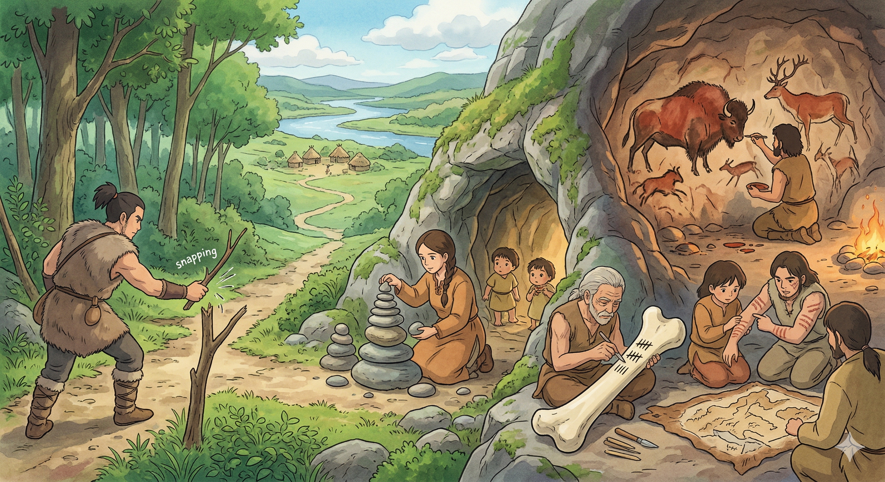

לפני חמישים אלף שנה: כשהעולם היה הזיכרון
לפני עשרות אלפי שנים, הזיכרון האנושי לא היה שונה מהותית מזה של כל בעל חיים אחר — הוא היה ביולוגי, אישי, ועמד במות כל פרט. אך בשלב כלשהו, עשה האדם גילוי עמוק: הוא יכול לגרום לסביבה לזכור עבורו. צייד שהוריד ענף ושבר אותו בצומת דרכים יצר חץ שיכוון אותו חזרה אל המחנה. אישה שסידרה ערמת אבנים בכניסה למערה הנחתה את ילדיה לדעת שהאם שבה. ציורים על קירות מערות, כמו אלו של לאסקו ואלטמירה, לא היו רק אמנות — הם היו מאגרי מידע: איזה חיה מסוכנת, איפה נמצאת, איך היא נראית בריצה. ערמות אבנים מסומנות ציינו מסלולי הגירה; חריצים בעצמות מנו לוחות שנה עונתיים; צמתים ופצעים על גופם של אנשים שימשו כמפות חיות. כל אחד מהם מייצג אותה תובנה מהפכנית: ניתן לאחסן ידע מחוץ לגוף, ולשחזר אותו מאוחר יותר. הסכום הכולל של "הידע שניתן להעביר" גדל פתאום מעבר לתחום הזיכרון הביולוגי הגולמי.

המצאת הכתב: הדחיסה הגדולה הראשונה
כשהסומרים המציאו את הכתב הקוני לפני כ-5,000 שנה, הם לא רק יצרו שיטת תיעוד — הם ביצעו את פעולת הדחיסה הראשונה בהיסטוריה האנושית. לפני הכתב, כל ידע שרצו להעביר לדורות הבאים דרש שחזור פיזי: מורה ותלמיד, דור ודור, פה לאוזן. הכתב שינה את המשוואה כולה. כעת, אמת שאורכה שנים של ניסיון אנושי יכלה להיכנס לשורה אחת של סימנים. חוק שחייב שופטים לזכור בעל פה יכול היה להיות מרוכז בלוח חרס. פרטי חשבונות הדגנים של אלפי בתי אב, שבעבר דרשו אנשי זיכרון ייעודיים — "מנהלי ידע" ביולוגיים — כובשו לכמה שורות של טקסט. זאת הייתה לא רק שיטת אחסון חדשה, אלא שינוי אנתרופולוגי עמוק: לראשונה, הזיכרון הפך לתשתית ציבורית. הוא ניתן להעתקה, הפצה, ותיקון. והחשוב מכל — שיעורו היחסי של הזיכרון ה"חי" שבמוחו של האדם הבודד, מול הזיכרון הכולל של החברה, החל לקטון בצורה שלא תיעצר עוד.
הספר: דחיסה שצריך מפתח לפתוח אותה
אך הכתב, ולאחריו הספר, חשפו פרדוקס מרתק. ספר אינו פשוט "זיכרון מאוחסן" — הוא זיכרון דחוס, ודחיסה דורשת מפתח שחרור. קחו ספר לימוד לתואר שני במתמטיקה — נאמר, גאומטריה דיפרנציאלית או תורת המידה. עבור מרבית בני האדם, הדפים הללו הם לא יותר מסימנים זרים על נייר. המידע טמון שם, אך הוא אטום לחלוטין — כמו קובץ מוצפן ללא סיסמה. אך אותו ספר בידיו של סטודנט שסיים שנתיים של אלגברה לינארית, אנליזה ממשית, וטופולוגיה — הופך לכלי של כוח יוצא דופן. כל משפט קצר נפתח אצלו לשרשרת של תובנות. כל הוכחה דחוסה משתחזרת בתוך מוחו לנוף שלם של רעיונות. הספר אינו מעביר אינפורמציה לבד — הוא מעביר אינפורמציה כשהוא פוגש ניסיון, וצירוף זה מוליד ידע שאינו טריוויאלי בשום פנים. בכך, הספר הוא בעצם ממשק: נקודת חיבור בין זיכרון חיצוני דחוס לבין הזיכרון הפנימי שנבנה לאורך שנות לימוד. ככל שהזיכרון הפנימי עשיר יותר — כך הספר "מוריד" יותר לתוך תודעת הקורא, כמו אות דחוסה שנפתחת לכל גודלה רק בסביבה שיש לה את האלגוריתם המתאים לפענח אותה.
מכבש הדפוס: כשהידע הפך ליציב
עד המאה החמש-עשרה, גם לאחר המצאת הכתב, עדיין שרר בעולם הידע אויב סמוי: השגיאה. כל ספר שהועתק ביד על ידי סופר — ולו המיומן ביותר — נשא בחובו סטייה קלה מן המקור. מילה שהוחלפה, מספר שהתחלף, פסקה שהושמטה בהיסעף עין. לאורך דורות של העתקה, הטקסטים "נשחקו" — כמו צילום של צילום של צילום. כאשר גוטנברג הפעיל את מכבש הדפוס שלו בשנות ה-1450, הוא שינה משהו יסודי: הידע הפך ליציב. אלף עותקים של אותו ספר היו זהים זה לזה עד לאות האחרונה. אך השינוי לא עצר שם. זמן ייצורו של ספר צנח ממה שנדרשו לו ימים שלמים של עמל ידני — לשעות ספורות עבור עשרות עותקים בו-זמנית. פתאום נפתח הידע לסדר גודל אחד נוסף של הפצה: לא עוד מנזרים ובתי מלוכה שמחזיקים ספרים כבסוד יקר, אלא אוניברסיטאות, סוחרים, ורופאים שיכלו כולם להחזיק בידיהם את אותו טקסט מדויק. הדפוס לא רק האיץ את הפצת הידע — הוא שינה את טיבו. ידע שניתן לשחזר בצורה מדויקת ולהפיצו לרחבי יבשת הפך, לראשונה בהיסטוריה, לתשתית ציבורית אמינה שעליה ניתן לבנות.
הדפוס כמנוע של מנועים
אך ההשפעה העמוקה של הדפוס לא הייתה רק בכך שהוא העתיק ספרים מהר יותר — אלא בכך שהוא יצר לראשונה תשתית שבה הידע האנושי יכול לצבור תאוצה. לפני הדפוס, כל מדען או פילוסוף שרצה לבנות על עבודתו של קודמו נדרש לעיתים קרובות להשיג את הטקסט המקורי בעצמו, או להסתמך על ציטוטים מפי אחרים — שגם הם אולי הכירו רק גרסה מועתקת ומשובשת. הדפוס שינה זאת מן היסוד. מדענים באנגליה ובאיטליה ובהולנד יכלו עתה לקרוא את אותה מהדורה מדויקת של אותו ניסוי, ולהגיב עליה, ולפרסם את תגובתם — ואחרים יכלו לקרוא גם אותה. הידע הפסיק להיות שרשרת של מסירה אחד-לאחד, והפך לרשת. המהפכה המדעית של המאות השש-עשרה והשבע-עשרה — קופרניקוס, גלילאו, ניוטון — אינה מקרה. היא פרחה בדיוק בדור שבו הדפוס הגיע לבשלות מלאה. פתאום יכול היה ניוטון לעמוד על כתפי ענקים — לא כמטאפורה, אלא כמשימה טכנית אפשרית: לקרוא, להבין, ולהמשיך. הדפוס לא רק הפיץ ידע — הוא הפך את הידע האנושי למצטבר.
מן הדפוס אל הדיגיטל: שלוש מאות שנה של האצה
בשלוש המאות שחלפו בין גוטנברג למחשב הראשון, לא עמד הידע האנושי על מקומו — הוא האיץ בהתמדה, גל אחר גל. כל טכנולוגיה חדשה של תיעוד והפצה הוסיפה שכבה נוספת על גבי הדפוס: כתבי עת מדעיים, שהחלו להופיע במאה השבע-עשרה, יצרו לראשונה מנגנון של עדכון מתמשך — במקום ספר שמתפרסם אחת לשנים, מאמר שמופץ תוך שבועות. הטלגרף והטלפון קיצרו את מרחקי ההעברה של מידע מחודשים לשניות. הרדיו והטלוויזיה הפכו את ההפצה להמונית באופן שגוטנברג עצמו לא היה מדמיין. ובכל אחת מן הקפיצות הללו חזר אותו תבנית: יותר ידע, מהיר יותר, ליותר אנשים, עם פחות אובדן ועיוות בדרך. אך לאורך כל התקופה הזו, עדיין שרר מגבלה עמוקה אחת: הידע נותר פיזי. ספרים תפסו מקום. ארכיונים תפסו בניינים. העתקה דרשה נייר ודיו. קטלוגים דרשו ספרנים. בשנות ה-1940 וה-1950, כשנולדו המחשבים הראשונים, עמד העולם על סף מעבר שלא היה כמוהו מאז הדפוס — מעבר שבו המגבלה הפיזית של הידע תתמוסס כמעט לחלוטין.
הידע הדיגיטלי: כשהמידע פשט את גופו
המהפכה הדיגיטלית עשתה לידע משהו שלא אירע לו מעולם — היא ניתקה אותו לחלוטין מן החומר. ספר תופס מקום, נשחק, נשרף, ומגיע לקורא אחד בכל רגע נתון. קובץ דיגיטלי אינו עושה דבר מאלה. העתקתו אינה עולה כלום, אינה לוקחת זמן בר-משמעות, ואינה יוצרת גרסה נחותה מן המקור — ההעתק מושלם כמו המקור בדיוק, ללא יוצא מן הכלל. אך הדיגיטל לא רק שחרר את הידע מן החומר — הוא שינה את יחסי הגודל כולם. ספרייה לאומית שמכילה מיליוני כרכים ודורשת בניין ענק, צוות של מאות עובדים, ותקציב של מדינה — נכנסת כולה לכונן קשיח שניתן להחזיק בכף היד. ואז הגיע האינטרנט, וביטל גם את מגבלת המרחק. ידע שיוצר בטוקיו זמין באותה שנייה בתל אביב ובבואנוס איירס. אנציקלופדיה שנדרשו לבנותה עשרות שנים ומאות מומחים — מתעדכנת עכשיו ברצף אחד חי, על ידי מיליוני אנשים, בכל שפה בו-זמנית. אך מעבר לכל אלה, הדיגיטל הביא עמו חידוש שהוא אולי העמוק מכולם: הידע הפך לניתן לחיפוש. לא עוד ספרן שזוכר היכן נמצא הדבר — אלא שאילתה של שנייה אחת שמוצאת מחט בתוך ערמת שחת של מיליארדי עמודים. לאט לאט, המגבלה שנותרה לא הייתה עוד איפה הידע מאוחסן, ולא כמה ממנו קיים — אלא מי יכול להבין אותו.
מכלי אחסון לכלי חשיבה
עד כה, כל הטכנולוגיות שתיארנו — מן החריץ בעצם הממותה ועד האינטרנט — עסקו בעיקרן בשאלה אחת: היכן מאחסנים ידע, וכיצד מעבירים אותו. המחשב האישי פתח בשקט פרק חדש לחלוטין. לראשונה, הכלי לא רק אחסן ידע — הוא יכול היה לפעול עליו. גיליון אלקטרוני אינו רק מחסן מספרים — הוא מחשב אותם, מגלה תבניות, ומציג תוצאות שאדם היה זקוק לשעות כדי להגיע אליהן. מעבד תמלילים אינו רק מכונת כתיבה מתוחכמת — הוא מארגן, מחפש, ומציע. ובאה תוכנת ניתוח נתונים, ואחריה מנועי החיפוש, ואחריהם מיליוני אפליקציות שכל אחת מהן היא למעשה ידע מקובע בצורת פעולה: ידע רפואי שנהפך לאפליקציית אבחון, ידע גיאוגרפי שנהפך לניווט, ידע פיננסי שנהפך לתכנון תקציב אוטומטי. האנושות גילתה שניתן לא רק לאחסן ידע בסביבה החיצונית — אלא לגרום לסביבה החיצונית לחשוב עם הידע הזה, ולעשות זאת מהר וללא עייפות. החלק של המוח האנושי בסך המעבוד של הידע האנושי — לא רק באחסון אלא גם בעיבוד — החל לקטון בצורה שניתן למדוד.
צוואר הבקבוק: מי יכול לבנות את הכלים
אך כאן נתקלת המהפכה הדיגיטלית במגבלה חדשה — ומפתיעה. הידע עצמו הפך נגיש לכולם, אך היכולת לבנות כלים שפועלים על הידע נותרה נחלתם של מעטים. כתיבת קוד — כלומר, יצירת מה שנוכל לקרוא לו "אופרטורים על מידע", מניפולציות שמעבדות ידע, מסננות אותו, מחשבות אותו, ומציגות אותו בצורה חדשה — דורשת מיומנות שנרכשת על פני שנים. מתכנת שרוצה לבנות כלי שמנתח נתוני רפואה, או שמארגן מחקרים לפי נושא, או שמחפש תבניות בתוך מסד נתונים ענק — נדרש לשנות לימוד, ואז לימים ושבועות של עבודה עבור כל כלי חדש. ומרבית האנשים שיש להם את הידע הנחוץ — הרופא שיודע מה שאלות רפואיות חשובות, הכלכלן שיודע אילו תבניות כלכליות מעניינות — אינם יודעים לכתוב קוד. ומי שיודע לכתוב קוד, לרוב אינו רופא ואינו כלכלן. כך נוצר פער: הידע קיים, הכלים לעבד אותו קיימים, אך היכולת ליצור אופרטורים חדשים על ידע חדש נותרת מרוכזת בידי מיעוט קטן של אנשים, שכל אחד מהם מוגבל עוד בצוואר הבקבוק של הזמן.
מודלי השפה: כשגם החשיבה יצאה מן הראש
ואז הגיעו מודלי השפה, וסגרו את הלולאה באופן שאיש לא ציפה לו במלואו. עד אותו רגע, תהליך ההוצאה של הידע האנושי אל הסביבה החיצונית עבר שני שלבים: ראשית, הידע עצמו — העובדות, התיאוריות, הנתונים — יצא החוצה, מן המוח אל הלוח, אל הספר, אל השרת. שנית, ראינו כי גם העיבוד של הידע החל לעבור החוצה, אך נתקע בצוואר הבקבוק של מי שיכול לכתוב קוד. מודלי השפה פרצו את צוואר הבקבוק הזה לחלוטין. כעת, מי שצריך אופרטור חדש על ידע — כלי שמנתח, מסכם, מארגן, משווה, מתרגם, מסיק — אינו זקוק עוד לשנות לימוד ולשבועות של פיתוח. הוא זקוק לדקות של שיחה. הרופא יכול לבנות כלי ניתוח בלי ללמוד תכנות. הכלכלן יכול להפיק תבניות ממסד נתונים בלי לדעת SQL. זוהי שנת 2026, והדבר המדהים ביותר אינו המהירות — אלא הרמה. הידע שמודלי השפה צברו, והפעולות הדיגיטליות שהם מסוגלים לבצע, עולים בפועל על יכולותיו של רוב מכריע של בני האדם ברוב תחומי הידע. לרגע ההיסטורי הזה יש משמעות עמוקה: לא רק שהחלק היחסי של הזיכרון האנושי בסך הזיכרון הכולל הולך ומצטמק — עכשיו גם החלק היחסי של החשיבה האנושית בסך החשיבה הכוללת החל לקטון, ובמהירות שלא ראינו כמותה מעולם.
אברא כדברא: שובו של הקסם
אך הסיפור אינו נגמר בחשיבה. לפני חמישים אלף שנה, הצייד שבר ענף — ובמחווה פשוטה זו ביצע את האקט הראשון של הוצאת הידע אל העולם. הסימן הפיזי בסביבה לא רק ייצג כוונה — הוא מימש אותה. מאז אותו ענף שבור, עברה האנושות מסע ארוך של הוצאת יכולות מתוכה החוצה: תחילה הזיכרון, אחר כך הידע, אחר כך החשיבה. אך תמיד נותר פער אחרון בין המחשבה לבין המציאות הפיזית — פער שמילאו ידי האדם, ומכונותיו, ועמלו. עידן הרובוטיקה הוא הצעד הבא בסדרה הזו. כשם שמודלי השפה הוציאו את האופרטורים על הידע מתוך מוחות המתכנתים — כך הרובוטים מוציאים את האופרטורים על העולם הפיזי מתוך ידי האדם. בניית בניינים, ייצור מכונות, עיבוד חומרים, ניהול מלחמות — כל אלה הופכים בהדרגה לפעולות שמקורן בכוונה, ולא בעמל. והשלב הבא, שכבר ניתן להבחין בקצהו, הוא העמוק ביותר: עולם שבו המחשבה עצמה יוצרת מציאות — שבו כוונה, מעובדת במחשב ומיושמת ברובוט, הופכת ישירות לחפץ, למבנה, למערכת. זהו אברא כדברא — בארמית המקורית: "אברא" מלשון "אבראה", אצור, ו"כדברא" מלשון "כדיבורא", כדיבורי. מה שאומר פי — ייברא. האנושות, שהתחילה בענף שבור על קרקע יער, מגיעה בשנת 2026 אל סף עידן שבו המרחק בין המחשבה לבין המציאות מצטמצם עד כדי אפס. לא בכדי קראו הקדמונים לזה קסם. אנחנו פשוט גילינו שהקסם היה תמיד שם — הוא רק חיכה לטכנולוגיה המתאימה.